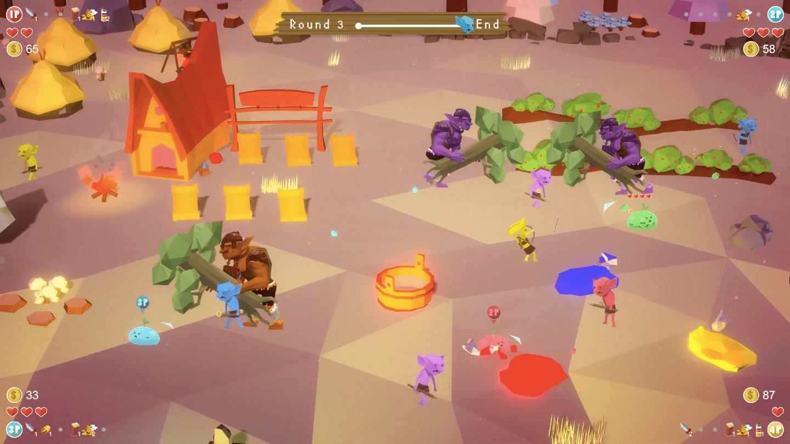
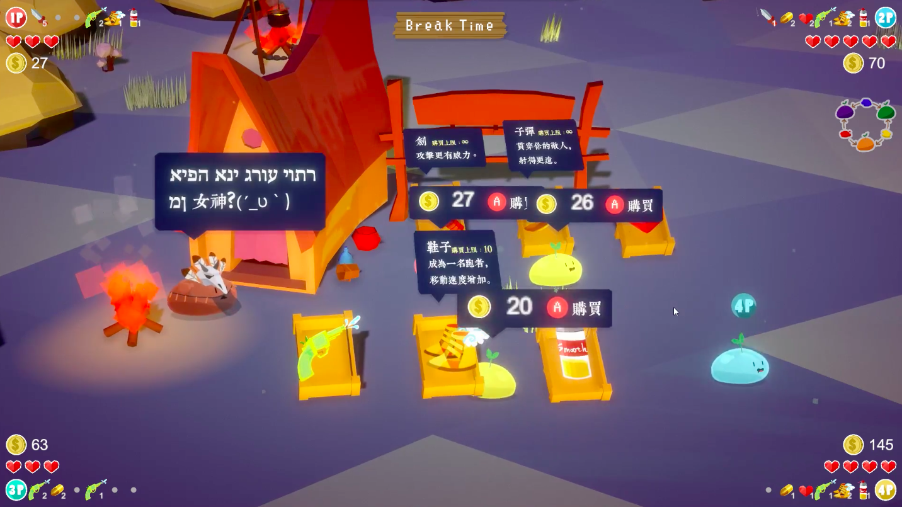
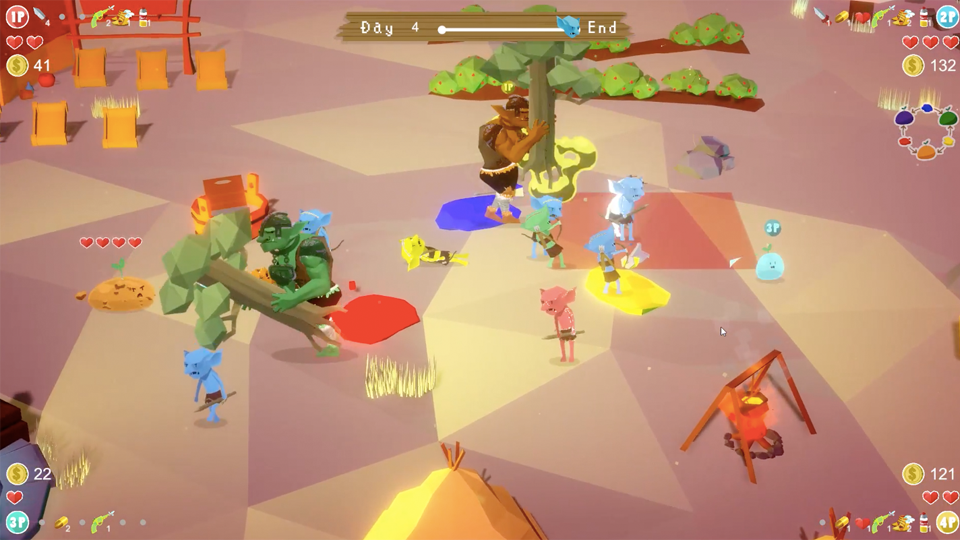

《顏料遊戲：史萊姆與地精之歌》
程式
顏料遊戲是以顏色與混色為核心玩法的多人合作射擊遊戲，四位玩家操作著四隻史萊姆對抗前來侵略村莊的地精大軍，直到能打倒幕後的主使者 - 哥布林祖靈。遊戲過程中，玩家必須將史萊姆染成與地精相同的顏色才能造成有效傷害，必要時須與隊友混合成進階顏色進行攻擊，過程中若不慎進入瀕死狀態時亦可等待隊友救援，同時已購買的裝備會隨機掉落一樣供隊友撿拾，十分講究玩家之間的默契與溝通。
獲獎紀錄
- 2019 KT科藝獎遊戲組之銅獎，於數位藝術節展出 - 2019 indiePlay中國獨立遊戲開發大賽季軍，於上海展出 - 2020放視大賞PC遊戲組佳作
相關連結
實機遊玩：https://www.youtube.com/watch?v=KbX2roxl66w 新聞報導：https://www.youtube.com/watch?v=t1IvkZ1tk2o&t=57s itch.io連結：https://kunlin.itch.io/gameofcolor